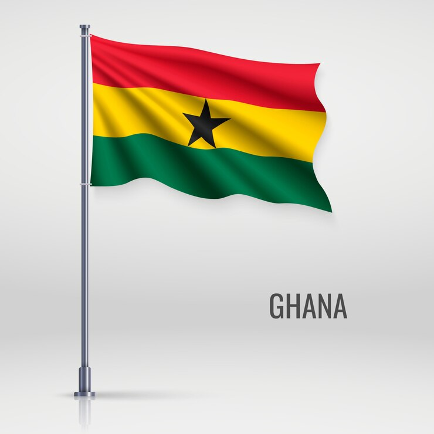

TOURISM
GHANA(The Gateway to the heart West Africa)
Explore rich culture and history, Natural Wonders,
Wildlife and Adventure, Food and Music, Safety and Tips.
Come and discover the warm heart of Africa in Ghana
Our Country
Ghana is a country located in West Africa
known for its rich cultural heritage
diverse traditions,
and stunning natural beauty.
Ghana is an exciting destination for tourists
and business travelers alike.

ExploreNow

tuo-zaafi with soup
A local Ghanaian dish eaten by the Northern
people of Ghana

Fufu with soup and meat
A local Ghanaian dish eaten by Akan ethnic
group of Ghana

Banku with black pepper and Tilapia
A local Ghanaian dish eaten by the Ewe ethnic
group of Ghana

Mushed plantain with groundnuts and pear(Etor)
A local Ghanaian dish eaten by the Akan ethnic
group of Ghana

Kenkey with pepper and Tilapia
A local Ghanaian dish eaten by the Ga-Adanbge ethnic
group of Ghana